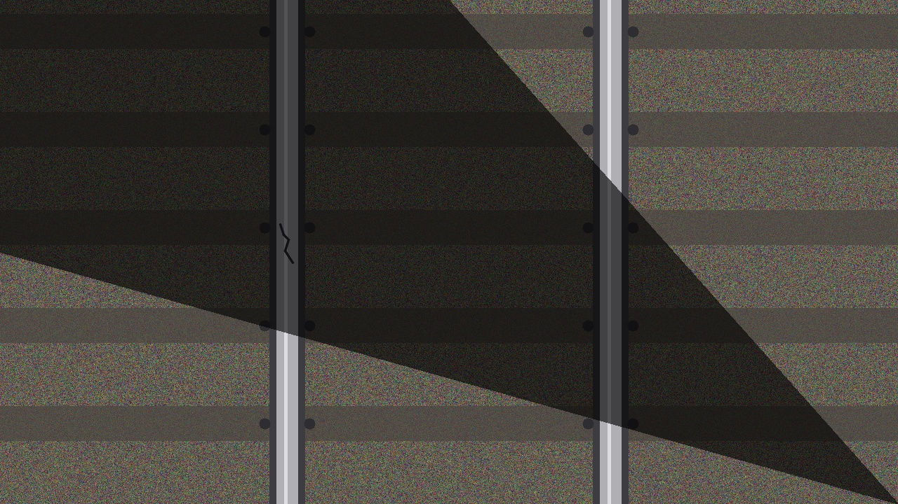
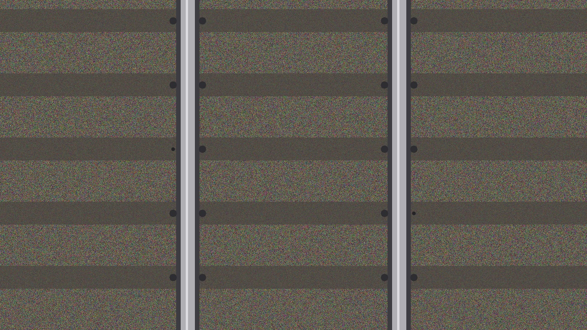
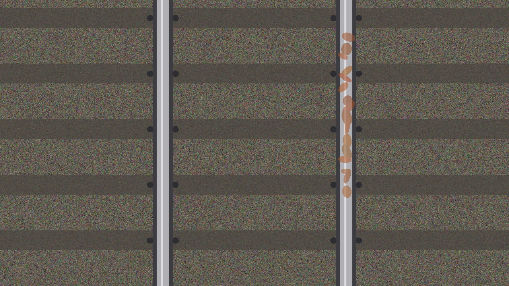
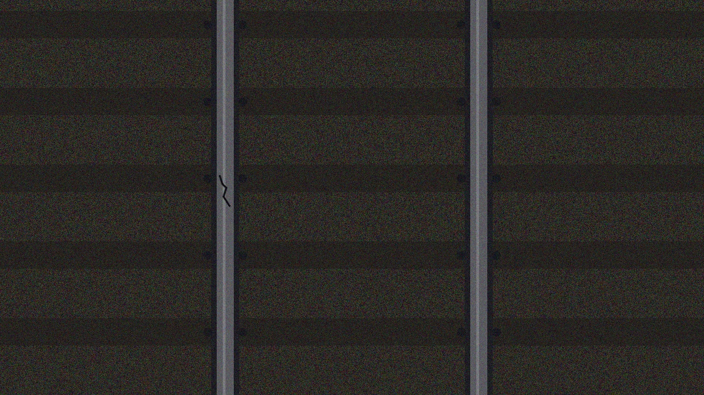
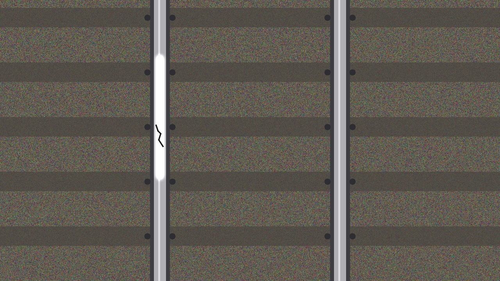
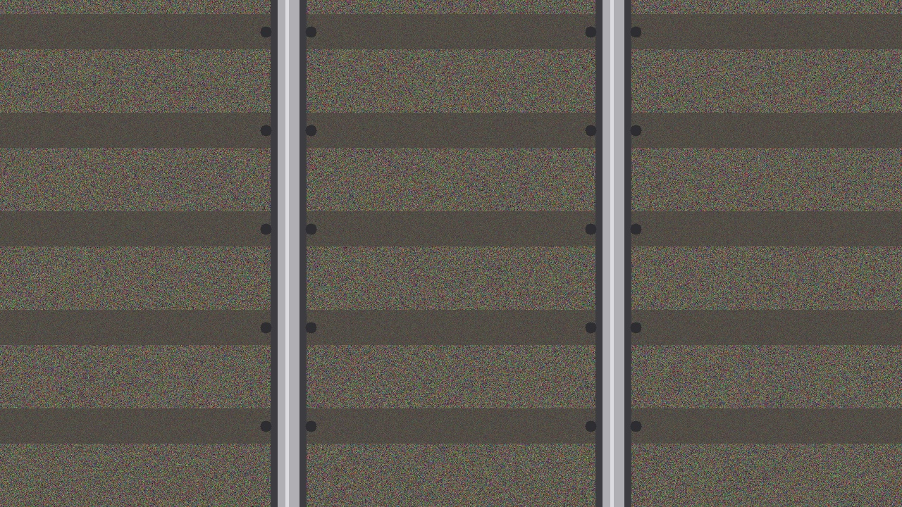
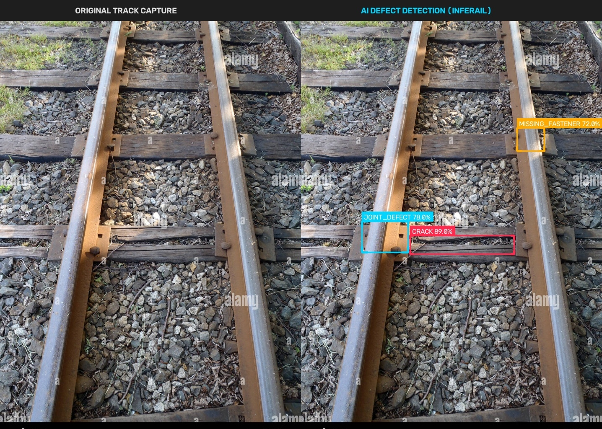

TRACK
INTELLIGENT, DATA-DRIVEN INSIGHTS
Automate Your
Railway Inspection
InfeRail uses YOLOv8 + ResNet-18 computer vision with CLAHE preprocessing to detect track defects, estimate severity, and visualize health trends on a real-time Streamlit dashboard.

6-Stage Computer Vision Pipeline
Built by Team 1 (Aniket) using OpenCV · Pillow · Albumentations
validate_image()
Accepts str | Path | np.ndarray | PIL.Image | bytes. Enforces uint8 RGB, min 10×10px, raises on corrupt inputs.
apply_clahe()
CLAHE on LAB lightness channel. clip_limit=2.5, tile grid 8×8. Recovers hairline cracks under shadow, glare, and low-light.
denoise_image()
Bilateral filter: d=7, σ_color=50, σ_space=50. Smooths ballast roughness while preserving crack edges (ΔI > 80).
letterbox()
Aspect-ratio preserving resize to 224×224 (or 384×384 for hairline cracks). Pads with rgb(114,114,114). Returns ratio + pad for inverse-mapping bboxes.
normalize_and_to_tensor()
÷255 → ImageNet mean/std standardization. Returns (3, H, W) float32 CHW array. Batch dim added by DataLoader during training, prepended at inference → (1, 3, 224, 224).
Albumentations Augmentations
Training-only: HorizontalFlip (p=0.5), RandomBrightnessContrast (p=0.6), MotionBlur (p=0.3), ShiftScaleRotate ±10° (p=0.4). CLAHE intentionally removed from augmentations to prevent duplication.
Real Track Test Images
6 curated edge-case images from the InfeRail test dataset — each targeting a distinct real-world condition


Missing Fastener
Rust Surface
Low Light
Specular Glare
Clean Track
Detection → Priority → Dashboard
Three decoupled modules with strict data contracts and handoff APIs
Image Upload
JPG/PNG via Streamlit uploader
CLAHE Preprocessing
preprocess_for_inference()
YOLOv8 Detection
detect_defects() → List[DetectionResult]
Severity Engine
evaluate_priority(detections) → PriorityReport
SQLite DB
save_inspection_record()
Streamlit Dashboard
Annotations · History · CSV Export
| TIER | LABEL | DEFECT TYPES | RESPONSE | CLASS COLOR |
|---|---|---|---|---|
T1 |
CRITICAL | Broken Rail, Multiple Consecutive Missing Fasteners | Immediate derailment risk — halt operations | Magenta |
T2 |
HIGH | Wide Surface Crack, Broken Fishplate, Joint Defect | Rapid maintenance dispatch within 24h | Crimson |
T3 |
MEDIUM | Minor Spalling, Light Surface Wear, Missing 1 Fastener | Scheduled inspection within 1 week | Amber |
T4 |
MONITOR | Cosmetic Rust, Superficial Surface Flaw | Monitor — log for trend analysis | Cyan |
Simulated Inspection Log
Mirrors the Streamlit dashboard data tables from the actual InfeRail app.py
Defect Registry
| DEFECT ID | CLASS | CONFIDENCE | BBOX (x1,y1,x2,y2) | PRIORITY | REASON | ACTION |
|---|---|---|---|---|---|---|
#DEF-001 |
crack | 94.0% | 100, 150, 300, 350 | HIGH | Surface crack exceeds severity threshold | |
#DEF-002 |
missing_fastener | 88.0% | 500, 200, 560, 260 | MEDIUM | Single fastener missing — schedule tamping | |
#DEF-003 |
joint_defect | 76.5% | 720, 300, 820, 380 | MONITOR | Minor joint gap — monitor for widening |
3 Teams · 6 Members · 2-Week Sprint
Each team owns a core architecture pillar with explicit data contract handoffs
Computer Vision & AI Pipeline
YOLOv8 architecture, inference wrapper, bounding box rendering in detector.py + visualizer.py
CLAHE · letterbox · bilateral denoising · ImageNet normalization · Albumentations augmentation in preprocessing.py
detect_defects(image_input) → Tuple[List[DetectionResult], np.ndarray]
Data Persistence & Prioritization
SQLite schema with inspections + defects tables, CRUD in db.py, seed data generator
Rule-based 4-tier priority engine in severity.py. Explicit: confidence ≠ severity
evaluate_priority(detections) → PriorityReport
Dashboard, Integration & QA
Connects Team 1 detector + Team 2 severity + DB into app.py. End-to-end upload → annotate → save → display loop
Streamlit UI widgets, Plotly analytics charts, CSV/PDF export in dashboard/export.py. Full Pytest suite
streamlit run app.py
Ready to Launch InfeRail?
Clone the repo, install dependencies, and run the Streamlit dashboard in one command.
pip install -r requirements.txt && streamlit run app.py